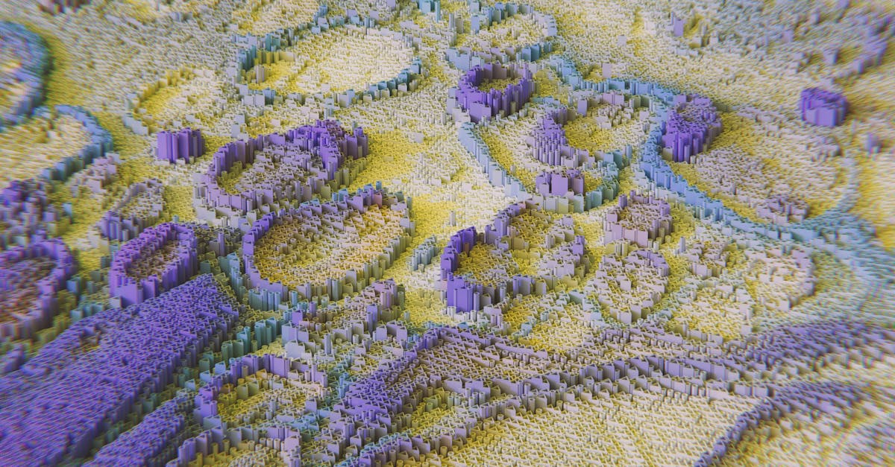
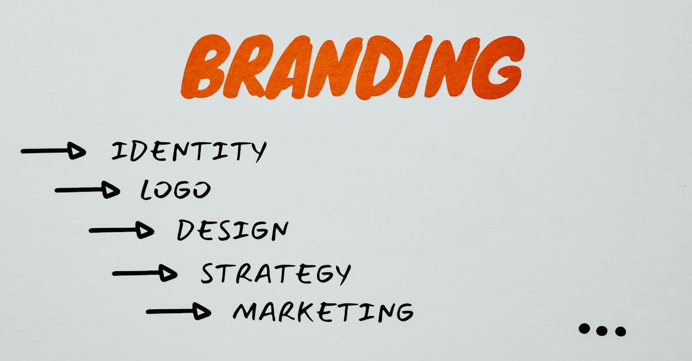

Canva AI 2.0 : Un Hub Centralisé pour la Création Augmentée par l'IA
Canva, le géant de la conception graphique accessible à tous, vient de franchir une nouvelle étape majeure avec le lancement de sa mise à jour Canva AI 2.0. Loin d'être une simple évolution, cette refonte positionne la plateforme comme un véritable hub centralisé pour la création de contenu assistée par l'intelligence artificielle. L'ambition est claire : démocratiser encore davantage la production visuelle et textuelle, en la rendant plus intuitive et rapide que jamais. L'innovation principale réside dans l'intégration poussée d'outils basés sur le langage naturel, permettant aux utilisateurs de décrire leurs besoins et de laisser l'IA transformer ces descriptions en éléments visuels ou en ajustements de design. Cette approche, dite « prompt-powered », ouvre des perspectives fascinantes, réduisant drastiquement la courbe d'apprentissage pour les novices et offrant une efficacité accrue aux professionnels. Dans un écosystème numérique où la demande de contenu frais et personnalisé ne cesse de croître, notamment pour le marketing digital et la communication sur les réseaux sociaux, Canva AI 2.0 se présente comme une solution particulièrement pertinente. Les créatifs, les marketeurs, mais aussi les petites entreprises et les indépendants, peuvent désormais imaginer et matérialiser leurs idées avec une facilité déconcertante, en se concentrant sur la stratégie plutôt que sur la technique pure. L'orchestration des modèles d'IA sous-jacents promet une cohérence et une qualité remarquables, faisant de cette mise à jour un tournant pour l'industrie de la création de contenu.

La Puissance du Langage Naturel au Service du Design : Comment Ça Marche ?
Le cœur de Canva AI 2.0 bat au rythme des avancées en traitement du langage naturel (NLP) et en génération de contenu par IA. La plateforme a développé une nouvelle couche d'orchestration qui permet à ses divers modèles d'IA de comprendre et d'interpréter les instructions textuelles des utilisateurs, appelées « prompts ». Imaginez pouvoir dire à Canva : « Crée une bannière pour un événement de lancement de produit technologique, avec une palette de couleurs futuristes et une typographie audacieuse », et voir instantanément plusieurs propositions visuelles apparaître. C'est désormais possible. Cette fonctionnalité s'étend bien au-delà de la simple génération d'images. Les utilisateurs peuvent modifier des éléments existants, changer des styles, ajuster des compositions, voire générer des textes d'accompagnement, simplement en formulant leur demande en langage courant. Par exemple, un prompt comme « Rends cet arrière-plan plus sombre et ajoute une légère texture granuleuse » peut transformer radicalement une création sans nécessiter une expertise technique en retouche photo. Cette interaction fluide entre l'humain et la machine est une avancée considérable. Elle permet une itération rapide et une exploration créative sans précédent. Les professionnels du marketing, habitués à jongler avec de multiples outils pour peaufiner leurs campagnes, trouveront ici un gain de temps et d'efficacité considérable. La capacité à générer rapidement des variations d'un même visuel pour tester différentes approches sur les marchés est particulièrement précieuse dans des secteurs dynamiques comme la finance ou les cryptomonnaies, où la réactivité est clé.
Au-delà du Visuel : L'IA Générative s'étend à Tous les Aspects du Contenu
Canva AI 2.0 ne se limite pas à la création d'images ou à la modification de mises en page. La plateforme intègre désormais des capacités d'IA générative qui touchent à l'ensemble du spectre de la création de contenu. Cela inclut la génération de texte, la suggestion de palettes de couleurs, la recommandation de polices, et même l'aide à la rédaction de textes marketing ou de slogans. L'objectif est de fournir un assistant créatif complet, capable d'accompagner l'utilisateur à chaque étape du processus, de l'idéation à la finalisation. Par exemple, un utilisateur pourrait demander à l'IA de générer plusieurs titres accrocheurs pour un article de blog sur les tendances de l'investissement en cryptomonnaies, ou de suggérer des descriptions de produits optimisées pour le référencement. Ces outils sont particulièrement utiles pour les équipes qui doivent produire un volume important de contenu diversifié. L'IA peut aider à maintenir une cohérence de marque tout en explorant de nouvelles idées créatives. La capacité à générer des variations rapides de contenu permet également de tester différentes approches marketing et d'optimiser les performances. Dans le domaine des crypto-actifs, où la communication doit être à la fois précise, engageante et rassurante, disposer d'outils capables de générer rapidement des contenus clairs et percutants est un avantage indéniable. Il ne s'agit pas de remplacer la créativité humaine, mais de l'augmenter, en automatisant les tâches répétitives et en fournissant des suggestions intelligentes pour inspirer et accélérer le processus créatif.
Impact sur les Professionnels du Marketing et de la Communication
Pour les professionnels du marketing, l'arrivée de Canva AI 2.0 représente une véritable révolution dans leur flux de travail. La capacité à générer rapidement des visuels percutants et personnalisés, adaptés à différentes plateformes et audiences, va considérablement réduire le temps consacré aux tâches de conception. Fini les longues heures passées à chercher la bonne image ou à ajuster des éléments graphiques complexes. Désormais, un simple prompt peut suffire à obtenir des résultats professionnels. L'IA devient un partenaire créatif, capable de proposer des idées, de générer des variations, et d'optimiser le contenu pour un impact maximal. Cela libère du temps précieux pour se concentrer sur des aspects plus stratégiques : analyse des données, définition des campagnes, compréhension des besoins clients, et optimisation des performances. L'efficacité accrue permet également de répondre plus rapidement aux évolutions du marché et aux demandes urgentes. Dans le secteur des technologies financières (FinTech) et des crypto-monnaies, où les cycles d'innovation sont rapides et la communication doit être constamment adaptée, ces outils offrent un avantage compétitif majeur. La capacité à produire rapidement des supports de communication clairs et engageants pour de nouveaux projets, des analyses de marché, ou des campagnes de sensibilisation est cruciale. Canva AI 2.0 permet ainsi aux équipes marketing de gagner en agilité, en créativité et en efficacité, tout en maintenant un haut niveau de qualité et de cohérence visuelle.
L'IA et le Trading de Cryptomonnaies : Une Synergie Émergente
Si Canva AI 2.0 se concentre sur la création de contenu, l'essor des outils d'IA générative comme ceux-ci résonne avec les avancées dans d'autres domaines où l'IA transforme les industries. Dans le monde du trading de cryptomonnaies, l'intelligence artificielle est déjà un acteur majeur. Des algorithmes sophistiqués analysent en temps réel des volumes massifs de données – prix, volumes, actualités, sentiment des réseaux sociaux – pour identifier des opportunités de trading et exécuter des transactions de manière autonome. L'arrivée d'outils comme Canva AI 2.0, qui facilitent la compréhension et l'interaction avec l'IA par le langage naturel, pourrait indirectement influencer ce secteur. Imaginez pouvoir demander à un assistant IA spécialisé dans le trading crypto : « Analyse les dernières tendances du marché pour le Bitcoin et génère un rapport visuel résumant les points clés et les risques potentiels ». Ou encore : « Crée une infographie expliquant la volatilité du marché des altcoins pour un public novice ». Bien que Canva ne propose pas directement ces fonctionnalités de trading, la démocratisation de l'IA conversationnelle et générative rend ces interactions plus accessibles. Les plateformes qui intègrent des agents IA capables de traiter et de synthétiser l'information, puis de la présenter de manière compréhensible, comme le fait Canva pour le design, ouvrent la voie à des outils d'aide à la décision plus intuitifs pour les traders. La capacité à générer rapidement des analyses visuelles claires à partir de données complexes est un atout majeur pour prendre des décisions éclairées dans un marché aussi volatil que celui des cryptomonnaies. C'est cette synergie entre la facilité d'utilisation de l'IA et la puissance de l'analyse qui façonne l'avenir.

Défis et Perspectives : Vers une Création de Contenu Toujours Plus Intelligente
Malgré l'enthousiasme suscité par Canva AI 2.0, certains défis subsistent. La question de l'originalité et de la propriété intellectuelle des contenus générés par IA reste un sujet de débat juridique et éthique. Il est crucial que les utilisateurs comprennent les limites et les conditions d'utilisation de ces outils. Par ailleurs, la dépendance croissante à l'IA pourrait, à terme, poser des questions sur le développement des compétences créatives humaines. Cependant, la vision de Canva semble être celle d'une collaboration homme-machine, où l'IA agit comme un amplificateur de potentiel plutôt qu'un substitut. Les perspectives sont immenses. On peut s'attendre à voir l'intégration d'IA encore plus spécialisées, capables de comprendre des contextes sectoriels précis, comme la finance ou la technologie blockchain. L'évolution des modèles d'IA permettra des créations plus sophistiquées, plus personnalisées, et une interaction encore plus naturelle. La capacité à générer non seulement du visuel mais aussi des stratégies de contenu complètes, basées sur l'analyse de données et les objectifs marketing, pourrait devenir la norme. Pour les plateformes de trading crypto, cela pourrait se traduire par des outils d'analyse et de reporting encore plus performants, capables de synthétiser des informations complexes en visualisations claires et exploitables, facilitant ainsi la prise de décision pour les investisseurs, qu'ils soient débutants ou expérimentés. L'avenir de la création de contenu est résolument tourné vers l'intelligence artificielle, promettant une efficacité et une accessibilité sans précédent.
Conclusion : L'IA au Service de la Créativité Démocratisée
Canva AI 2.0 marque une étape décisive dans la démocratisation de la création de contenu assistée par l'intelligence artificielle. En plaçant le langage naturel au cœur de son interface, la plateforme rend la conception graphique et la production de contenu plus accessibles que jamais. Les outils pilotés par des prompts permettent aux utilisateurs de donner vie à leurs idées avec une simplicité et une rapidité remarquables, transformant ainsi le flux de travail des professionnels du marketing, des créateurs indépendants et des entreprises de toutes tailles. Si cette révolution concerne avant tout le domaine du design et de la communication, elle s'inscrit dans une tendance plus large où l'IA redéfinit les standards d'efficacité et d'innovation dans de nombreux secteurs, y compris celui, particulièrement dynamique, du trading de cryptomonnaies. L'agent IA de CryptoMind AI, qui automatise le trading 24h/24, illustre parfaitement cette tendance à l'automatisation intelligente. L'évolution de plateformes comme Canva montre comment l'IA peut être mise au service de la performance, en rendant des processus complexes plus intuitifs et en libérant le potentiel humain. L'avenir de la création, comme celui de l'investissement, sera sans aucun doute façonné par notre capacité à collaborer avec ces outils intelligents.